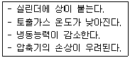
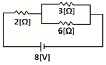
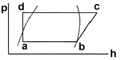
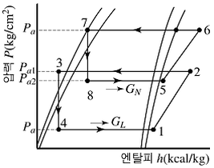
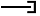

공조냉동기계기능사 (2012-07-22 기출문제)
1과목: 공조냉동안전관리
1. 중량물을 운반하기 위하여 크레인을 사용하고자 한다. 크레인의 안전한 사용을 위해 지정거리에서 권상을 정지시키는 방호장치는?
- 과부하 방지 장치
- 권과 방지 장치
- 비상 정지 장치
- 해지 장치
(정답률: 85%)

2. 냉동기계 설치 시 각 기기의 위치를 정하기 위한 설명으로 옳지 않은 것은?
- 운전상 작업의 용이성을 고려할 것
- 실내의 기계 상태를 일부분만 볼 수 있게 하고 제어가 쉽도록 할 것
- 실내의 조명과 환기를 고려할 것
- 현장의 상황에 맞는가를 조사할 것
(정답률: 92%)
3. 안전화의 구비조건에 대한 설명으로 틀린 것은?
- 정전화는 인체에 대전된 정전기를 구두바닥을 통하여 땅으로 누전시킬 수 있는 재료를 사용할 것
- 가죽제 안전화는 가능한 한 무거울 것
- 착용감이 좋고 작업에 편리할 것
- 앞발가락 끝부분에 선심을 넣어 압박 및 충격에 대하여 착용자의 발가락을 보호할 수 있을 것
(정답률: 95%)
4. 누전 및 지락의 방지대책으로 적절하지 못한 것은?
- 절연 열화의 방지
- 퓨즈, 누전차단기 설치
- 과열, 습기, 부식의 방지
- 대전체 사용
(정답률: 75%)
5. 보일러 취급 부주의에 의한 사고 원인이 아닌 것은?
- 이상 감수(減水)
- 압력 초과
- 수처리 불량
- 용접 불량
(정답률: 79%)
6. 연소에 관한 설명이 잘못된 것은?
- 온도가 높을수록 연소속도가 빨라진다.
- 입자가 작을수록 연소속도가 빨라진다.
- 촉매가 작용하면 연소속도가 빨라진다.
- 산화되기 어려운 물질일수록 연소속도가 빨라진다.
(정답률: 91%)
7. 전기용접 작업의 안전사항에 해당되지 않는 것은?
- 용접 작업 시 보호구를 착용토록 한다.
- 홀더나 용접봉은 맨손으로 취급하지 않는다.
- 작업 전에 소화기 및 방화사를 준비한다.
- 용접이 끝나면 용접봉은 홀더에서 빼지 않는다.
(정답률: 93%)
8. 안전장치에 관한 사항으로 옳지 않은 것은?
- 해당설비에 적합한 안전장치를 사용한다.
- 안전장치는 수시로 점검한다.
- 안전장치는 결함이 있을 때에는 즉시 조치한 후 작업한다.
- 안전장치는 작업형편상 부득이한 경우에는 일시적으로 제거하여도 좋다.
(정답률: 95%)
9. 위험물 취급 및 저장 시의 안전조치 사항 중 틀린 것은?
- 위험물은 작업장과 별도의 장소에 보관하여야 한다.
- 위험물을 취급하는 작업장에는 너비 0.3m 이상, 높이 2m 이상의 비상구를 설치하여야 한다.
- 작업장 내부에는 작업에 필요한 양만큼만 두어야 한다.
- 위험물을 취급하는 작업장에는 출입구와 같은 방향에 있지 아니하고, 출입구로부터 3m 이상 떨어진 곳에 비상구를 설치하여야 한다.
(정답률: 81%)
10. 산소-아세틸렌 가스용접 시 역화현상이 발생하였을 때 조치사항으로 적절하지 못한 것은?
- 산소의 공급압력을 최대로 높인다.
- 팁 구멍의 이물질제거 등 토치의 기능을 점검한다.
- 팁을 물로 냉각한다.
- 아세틸렌을 차단한다.
(정답률: 83%)
11. 수공구 사용 시 주의사항으로 적당하지 않은 것은?
- 작업대 위의 공구는 작업 중에도 정리한다.
- 스패너 자루에 파이프를 끼어 사용해서는 안 된다.
- 서피스 게이지의 바늘 끝은 위쪽으로 향하게 둔다.
- 사용 전에 이상 유무를 반드시 점검한다.
(정답률: 86%)
12. 사업주는 그 작업조건에 적합한 보호구를 동시에 작업하는 근로자의 수 이상으로 지급하고 이를 착용하도록 하여야 한다. 이 때 적합한 보호구 지급에 해당되지 않는 것은?
- 보안경 : 물체가 날아 흩어질 위험이 있는 작업
- 보안면 : 용접 시 불꽃 또는 물체가 날아 흩어질 위험이 있는 직업
- 안전대 : 감전의 위험이 있는 작업
- 방열복 : 고열에 의한 화상 등의 위험이 있는 작업
(정답률: 89%)
13. 냉동설비의 설치공사 완료 후 시운전 또는 기밀시험을 실시할 때 사용할 수 없는 것은?
- 헬륨
- 산소
- 질소
- 탄산가스
(정답률: 85%)
14. 다음 보기의 설명에 해당되는 것은?

- 액 햄머
- 커퍼 플레이팅
- 냉매과소 충전
- 플래쉬 가스 발생
(정답률: 69%)
15. 추락을 방지하기 위해 작업발판을 설치해야 하는 높이는 몇 m 이상 인가?
- 2
- 3
- 4
- 5
(정답률: 87%)
2과목: 냉동기계
16. 그림과 같은 회로에서 6[Ω]에 흐르는 전류[A]는 얼마인가?

- 1/3 [A]
- 2/3 [A]
- 1/2 [A]
- 3/2 [A]
(정답률: 73%)
17. 이상기체의 엔탈피가 변하지 않는 과정은?
- 가역 단열과정
- 등온과정
- 비가역 압축과정
- 교축과정
(정답률: 61%)
18. 다음 중 열펌프(Heat Pump)의 열원이 아닌 것은?
- 대기
- 지열
- 태양열
- 빙축열
(정답률: 73%)
19. 수동나사 절삭 방법 중 잘못 된 것은?
- 관을 파이프 바이스에서 약 150㎜ 정도 나오게 하고, 관이 찌그러지지 않게 주의하면서 단단히 물린다.
- 관 끝은 절삭날이 쉽게 들어갈 수 있도록 약간의 모따기를 한다.
- 나사 절삭기를 관에 끼우고 래칫을 조정한 다음 약 30° 씩 회전시킨다.
- 나사가 완성되면 편심 핸들을 급히 풀고 절삭기를 뺀다.
(정답률: 89%)
20. 원심력을 이용하여 냉매를 압축하는 형식으로 터보압축기라고도하며, 흡입하는 냉매증기의 체적은 크지만 압축압력을 크게 하기 곤란한 압축기는?
- 원심식 압축기
- 스크류 압축기
- 회전식 압축기
- 왕복동식 압축기
(정답률: 77%)
21. 액을 수액기로 유입시키는 냉매 회수장치의 구성요소가 아닌 것은?
- 3방 밸븐
- 고압압력 스위치
- 체크 밸브
- 플로우트 스위치
(정답률: 37%)
22. 열역학 제1법칙을 설명한 것 중 옳은 것은?
- 열평형에 관한 법칙이다.
- 이론적으로 유도 가능하여 엔트로피의 뜻을 잘 설명한다.
- 이상 기체에만 적용되는 열량 법칙이다.
- 에너지 보존의 법칙 중 열과 일의 관계를 설명한 것이다.
(정답률: 77%)
23. 프레온 냉동장치에서 필요 없는 것은?
- 워터 자켓
- 드라이어
- 액분리기
- 유분리기
(정답률: 72%)
24. 고체 냉각식 동결장치의 종류에 속하지 않는 것은?
- 스파이럴식 동결장치
- 배치식 콘택트 프리져 동결장치
- 연속식 싱글 스틸 벨트 프리져 동결장치
- 드럼 프리져 동결장치
(정답률: 69%)
25. 압축식 냉동장치를 운전하였더니 다음 그림과 같은 사이클이 형성되었다. 이 장치의 성적계수는 약 얼마인가? (단, 각 점의 엔탈피는 a:115, b:143, c:154kcal/kg이다.)

- 4.55
- 3.55
- 2.55
- 1.55
(정답률: 55%)
26. 다음 중 배관의 부식방지용 도료가 아닌 것은?
- 광명단
- 산화철
- 규조토
- 타르 및 아스팔트
(정답률: 61%)
27. 증기 압축식 냉동기와 흡수식 냉동기에 대한 설명 중 잘못된 것은?
- 증기를 값싸게 얻을 수 있는 장소에서는 흡수식이 경제적으로 유리하다.
- 냉매를 압축하기 위해 압축식에서는 기계적 에너지를 흡수식에서는 화학적 에너지를 이용한다.
- 흡수식에 비해 압축식이 열효율이 높다.
- 동일한 냉동능력을 갖기 위해서 흡수식은 압축식에 비해 장치가 커진다.
(정답률: 60%)
28. 다음 전기에 대한 설명 중 틀린 것은?
- 전기가 흐르기 어려운 정도를 컨덕턴스라 한다.
- 일정시간 동안 전기에너지가 한 일의 양을 전력량이라 한다.
- 일정한 도체에 가한 전압을 증가시키면 전류도 커진다.
- 기전력은 전위차를 유지시켜 전류를 흘리는 원동력이 된다.
(정답률: 75%)
29. 냉동장치에서 디스트리뷰터(distributor)의 역할로써 가장 적합한 것은?
- 냉매의 분배
- 토출가스 과열
- 증발온도 저하
- 플래시가스 발생
(정답률: 68%)
30. 다음 그림은 무슨 냉동사이클 이라고 하는가?

- 2단 압축 1단 팽창 냉동사이클
- 2단 압축 2단 팽창 냉동사이클
- 2원 냉동사이클
- 강제 순환식 2단 사이클
(정답률: 69%)
31. 1psi는 약 몇 gf/cm2인가?
- 64.5
- 70.3
- 82.5
- 98.1
(정답률: 54%)
32. 브라인에 암모니아 냉매가 누설 되었을 때, 적합한 누설 검사 방법은?
- 비눗물 등의 발포액을 발라 검사한다.
- 누설 검지기로 검사한다.
- 헬라이드 토치로 검사한다.
- 네슬러 시약으로 검사한다.
(정답률: 67%)
33. 각종 밸브의 종류와 용도와의 관계를 설명한 것이다. 잘못된 것은?
- 글로브밸브 : 유량 조절용
- 체크밸브 : 역류 방지용
- 안전밸브 : 이상 압력 조정용
- 콕 : 0~180° 사이의 회전으로 유로의 느린 개폐용
(정답률: 80%)
34. 다음 중 냉매의 성질로 옳은 것은?
- 암모니아는 강을 부식시키므로 구리나 아연을 사용한다.
- 프레온은 절연내력이 크므로 밀폐형에는 부적합하고 개방형에 사용된다.
- 암모니아는 인조고무를 부식시키고 프레온은 천연고무를 부식시킨다.
- 프레온은 수분과 분리가 잘되므로 드라이어를 설치할 필요는 없다.
(정답률: 63%)
35. 2단 압축 냉동사이클에서 저압측 증발압력이 3kgf/cm2g이고, 고압측 응축압력이 18kgf/cm2g일 때 중간압력은 약 얼마인가? (단, 대기압은 1kgf/cm2a 이다)
- 6.7 kgf/cm2a
- 7.8 kgf/cm2a
- 8.7 kgf/cm2a
- 9.5 kgf/cm2a
(정답률: 40%)
36. 브라인 동결 방지의 목적으로 사용되는 기기가 아닌 것은?
- 서모스탯
- 단수 릴레이
- 흡입압력 조정 밸브
- 증발압력 조정 밸브
(정답률: 41%)
37. 왕복동 압축기의 기계효율(ηm)에 대한 설명으로 옳은 것은? (단, 지시 동력은 가스를 압축하기 위한 압축기의 실제 필요 동력이고, 축 동력은 실제 압축기를 운전하는데 필요한 동력이며, 이론적 동력은 압축기의 이론상 필요한 동력을 말 한다.)
- 지시동력 / 축동력
- 이론적동력 / 지시동력
- 지시동력 / 이론적동력
- (축동력×지시동력) / 이론적동력
(정답률: 63%)
38. 자연적인 냉동방법 중 얼음을 이용하는 냉각법과 가장 관계가 많은 것은?
- 융해열
- 증발열
- 승화열
- 응고열
(정답률: 57%)
39. 2단 압축장치의 중간 냉각기 역할이 아닌 것은?
- 압축기로 흡입되는 액냉매를 방지하기 위함이다.
- 고압응축액을 냉각시켜 냉동능력을 증대시킨다.
- 저단측 압축기 토출가스의 과열을 제거한다.
- 냉매액을 냉각하여 그 중에 포함되어 있는 수분을 동결시킨다.
(정답률: 52%)
40. 역 카르노 사이클은 어떤 상태변화 과정으로 이루어져 있는가?
- 2개의 등온과정, 1개의 등압과정
- 2개의 등압과정, 2개의 교축작용
- 2개의 단열과정, 1개의 교축과정
- 2개의 단열과정, 2개의 등온과정
(정답률: 83%)
41. 터보 압축기의 특징으로 맞지 않는 것은?
- 임펠러에 의한 원심력을 이용하여 압축한다.
- 응축기에서 가스가 응축하지 않을 경우 이상고압이 발생된다.
- 부하가 감소하면 서징을 일으킨다.
- 진동이 적고, 1대로도 대용량이 가능하다.
(정답률: 40%)
42. 강제급유식에 기어펌프를 많이 사용하는 이유로 가장 적합한 것은?
- 유체의 마찰저항이 크기 때문에
- 저속으로도 일정한 압력을 얻을 수 있기 때문에
- 구조가 복잡하기 때문에
- 대형으로만 높은 압력을 얻을 수 있기 때문에
(정답률: 77%)
43. 압축기 및 응축기에서 심한 온도 상승을 방지하기 위한 대책이 아닌 것은?
- 불응축 가스를 제거한다.
- 규정된 냉매량 보다 적은 냉매를 충전한다.
- 충분한 냉각수를 보낸다.
- 냉각수 배관을 청소한다.
(정답률: 81%)
44. 관의 끝부분의 표시방법에서 종류별 그림기호를 나타낸 것으로 틀린 것은?
- 용접식 캡 :
- 체크포인트 :
- 블라인더 플랜지 :
- 나사박음 캡 :

(정답률: 68%)
45. 냉동장치에서 압력과 온도를 낮추고 동시에 증발기로 유입되는 냉매량을 조절해 주는 곳은?
- 수액기
- 압축기
- 응축기
- 팽창밸브
(정답률: 76%)
3과목: 공기조화
46. 가습효율이 100%에 가까우며 무균이면서 응답성이 좋아 정밀한 습도제어가 가능한 가습기는?
- 물분무식 가습기
- 증발팬 가습기
- 증기 가습기
- 소형 초음파 가습기
(정답률: 68%)
47. 송풍기의 종류 중 전곡형과 후곡형 날개 형태가 있으며, 다익송풍기, 터보송풍기 등으로 분류되는 송풍기는?
- 원심 송풍기
- 축류 송풍기
- 사류 송풍기
- 관류 송풍기
(정답률: 72%)
48. 개별 공조방식의 특징이 아닌 것은?
- 국소적인 운전이 자유롭다.
- 중앙방식에 비해 소음과 진동이 크다.
- 외기 냉방을 할 수 있다.
- 취급이 간단하다.
(정답률: 77%)
49. 증기배관의 말단이나 방열기 환수구에 설치하여 증기관이나 방열기에서 발생한 응축수 및 공기를 배출시키는 장치는?
- 공기빼기밸브
- 신축이음
- 증기트랩
- 팽창탱크
(정답률: 61%)
50. 조화된 공기를 덕트에서 실내에 공급하기 위한 개구부는?
- 취출구
- 흡입구
- 펀칭메탈
- 그릴
(정답률: 70%)
51. 공기조화기에 있어 바이패스 팩터(bypass factor)가 작아지는 경우에 해당되는 것이 아닌 것은?
- 전열면적이 클 때
- 코일의 열수가 많을 때
- 송풍량이 클 경우
- 핀 간격이 좁을 때
(정답률: 47%)
52. 온수난방 방식에서 방열량이 2500kcal/h 인 방열기에 공급되어야 할 온수량은 약 얼마인가? (단, 방열기 입구 온도는 80℃, 평균온도에 있어서 70℃, 물의 비열은 1.0kcal/kg℃, 평균온도에 있어서 물의 밀도는 977.5kg/m3 이다.)
- 0.135 m3/h
- 0.255 m3/h
- 0.345 m3/h
- 0.465 m3/h
(정답률: 53%)
53. 쉘 튜브(shell & tube)형 열교환기에 관한 설명으로 옳은 것은?
- 전열관 내 유속은 내식성이나 내마모성을 고려하여 1.8m/s 이하가 되도록 하는 것이 바람직하다.
- 동관을 전열관으로 사용할 경우 유체 온도가 200℃ 이상이 좋다.
- 증기와 온수의 흐름은 열 교환 측면에서 병행류가 바람직하다.
- 열 관류율은 재료와 유체의 종류에 상관없이 거의 일정하다.
(정답률: 76%)
54. 환기방법 중 제1종 환기법으로 맞는 것은?
- 강제급기와 강제배기
- 강제급기와 자연배기
- 자연급기와 강제배기
- 자연급기와 자연배기
(정답률: 84%)
55. 공기조화 방식 중에서 중앙식의 전공기 방식에 속하는 것은?
- 패키지 유닛방식
- 복사 냉난방식
- 팬코일 유닛방식
- 2중 덕트방식
(정답률: 55%)
56. 틈새바람에 의한 부하를 계산하는 방법에 속하지 않는 것은?
- 창 면적법
- 크랙(crack)법
- 환기횟수법
- 바닥 면적법
(정답률: 66%)
57. 상당증발량이 3000kg/h 이고 급수온도가 30℃, 발생증기 엔탈피가 635.2kcal/kg일 때 실제 증발량은 약 얼마인가?
- 2048kg/h
- 2200kg/h
- 2472kg/h
- 2672kg/h
(정답률: 32%)
58. 원통보일러의 장점에 속하지 않는 것은?
- 부하변동에 따른 압력변동이 적다.
- 구조가 간단하다.
- 고장이 적으며 수명이 길다.
- 보유수량이 적어 파열사고 발생 시 위험성이 적다.
(정답률: 68%)
59. 공기의 설명 중 틀린 것은?
- 공기 중의 수분이 불포화 상태에서는 건구온도가 습구온도보다 높게 나타난다.
- 공기에 가습, 강습이 없어도 온도가 변하면 상대습도는 변한다.
- 건공기는 수분을 전혀 함유하지 않은 공기이며, 습공기란 건조공기 중에 수분을 함유한 공기이다.
- 공기 중의 수증기 일부가 응축하여 물방울이 맺히기 시작하는 점을 비등점이라 한다.
(정답률: 61%)
60. 실내의 사람이 쾌적하게 생활할 수 있도록 조절해 주어야 할 사항으로 거리가 먼 것은?
- 공기의 온도
- 공기의 습도
- 공기의 압력
- 공기의 속도
(정답률: 70%)